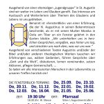

Für Menschen in der Lebensmitte
Fensterblick
Raum für Austausch über Glauben, Beruf und Lebensfragen — speziell für Menschen in der Mitte des Lebens.

Fensterblick richtet sich an Menschen in der Lebensmitte und bietet einen geschützten Rahmen, um über Glaubens-, Lebens- und Berufsfragen ins Gespräch zu kommen.
Die Treffen finden im Pfarrsaal der Augustinerstraße 3 sowie an wechselnden Orten im Kloster statt. Das jährliche Programm wird jeweils zu Beginn der Saison bekanntgegeben.
Kontakt
Pfarre St. Augustin, Augustinerstraße 3, 1010 Wien
Telefon: +43 (0)1 533 70 99
Telefon: +43 (0)1 533 70 99